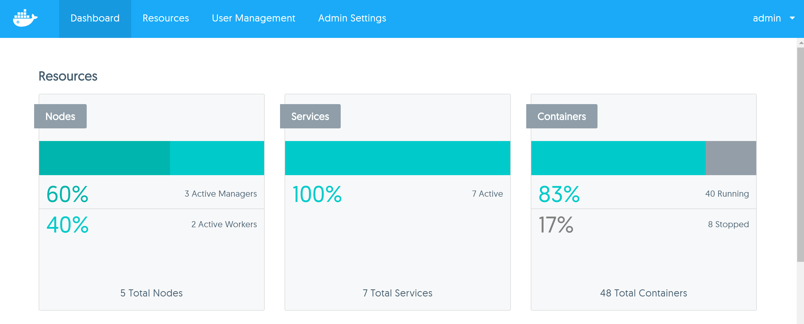
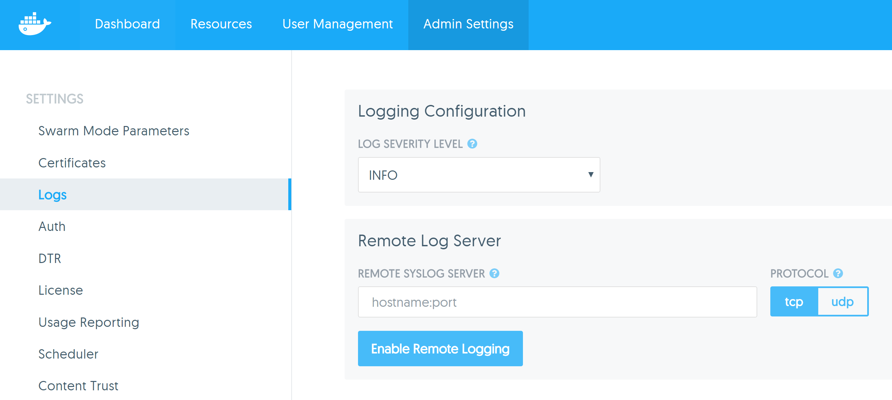
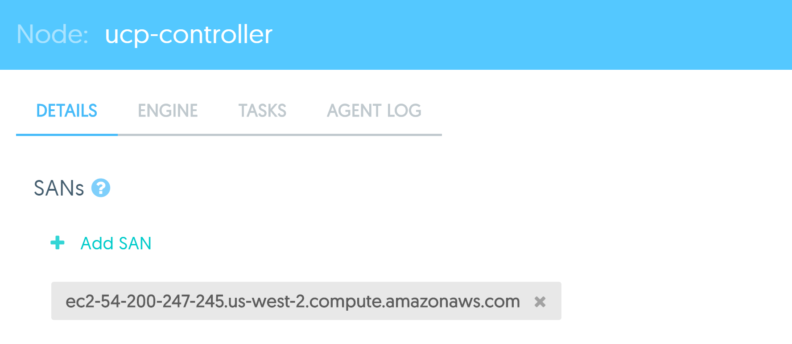

Mini lecture - Monitoring and Recovery of UCP and applications
Mini lecture - Monitoring and Recovery of UCP and applications
Monitoring applications
- Understand the Services and/or containers involved in each application and their function
- Container details tab tells us important information about the configuration of the container
- Can check container logs from the GUI
- Equivalent of running
docker logs
- "Stats" tab shows CPU and memory usage along with network traffic
- "Console" tab provides console access
Dashboard statistics
- Provides a quick summary of Nodes, Services and Containers
- Shows the percentages that are running

Monitoring UCP
- Error message can often be found on the
ucp-controller container log
- Log level can be configured and messages can be sent to syslog server

On Node failure - Services
- All containers on a failed node stop running
- Swarm mode will maintain the Service desired state, guaranteeing that the specified number of Service replicas will always be run
- If one container in a Service fails, a new task is scheduled onto a different node
- Try to restart the node
- On Node restart, containers that were previously running there as part of a Service have already been rescheduled onto
a different node. They will not be moved back.
On Node failure for legacy applications
- All containers on a failed node stop running
- Unless configured, containers will not be rescheduled to other nodes in the cluster
- Try to restart the node
- On Node restart, containers that were previously running need to be manually restarted
- Can set restart policy on containers
Common problems
- X509 certificate signed by unknown authority when using client bundle
- Usually indicates incorrect SAN configuration on UCP install
- Check certificate on your browser to find the SAN values
- Change
DOCKER_HOST variable to use a supported SAN value on your certificate
- Configure the SAN value on the manager node in the web UI

- 500 Internal Server Error: failed to parse pool request for address space "GlobalDefault" pool ...
- Occurs when trying to create an overlay network when nodes have not been registered with
etcd
- Multi host networking not setup or setup incorrectly
- Check configuration on each node at
/etc/docker/daemon.json
- Check
ucp-controller logs for error messages concerning the cluster
- 409 Conflict: subnet sandbox join failed for "": overlay subnet has conflicts in the host while running in host mode
- Subnet conflicts with existing subnet on the host
- Tends to occur on Amazon EC2 nodes
- Solution: create the network with a manually defined subnet
- Solution: Upgrade Linux kernel to 3.19+